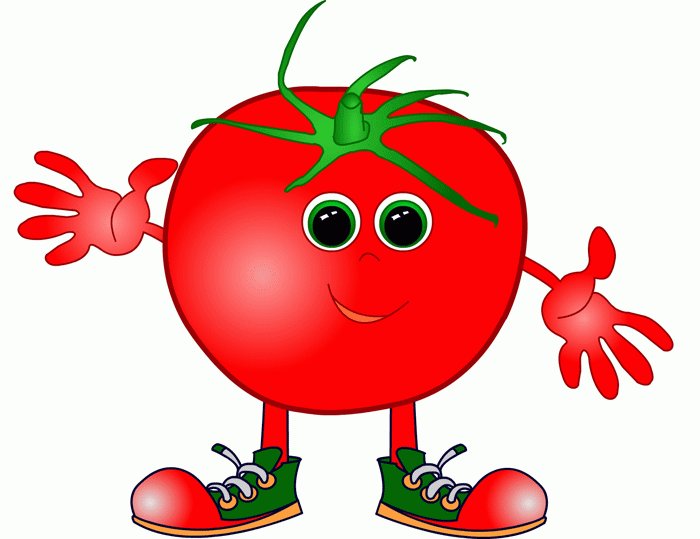

Salad Receipes
Salad greens contain Vitamin A, Vitamin C, beta-carotene, calcium, folate, fiber, and phytonutrients. Leafy vegetables are a good choice for a healthful diet because they do not contain cholesterol and are naturally low in calories and sodium. It works great for the persons with diabetes and Vegetable salads keep weight down.
Doctors always advise to eat a healthy salad on daily basis, it may be vegetable salad, fruit salad, mixed salad, etc. Today in such a stressful life, healthy food is an essential phenomenon, that provides multivitamins to our body. Eating healthy salad becomes necessary to run smoothly in the life. Eating healthy salad is a good habit, that must be adopted by everyone and anyone.
1. Carrot Salad with Black Grape Dressing.
Method
Carrots, almonds, raisins and spring onions work together to create a gorgeous desserts that's not only light on the stomach but also really refreshing. This healthy recipe has it all that takes to fight those extra pounds.
2. Barley Salad
Method
Toss up some red and yellow bell pepper, sun-kissed corn, cooked barley, garlic, parsley and a handful of other herbs for a salad so bright and healthy, it'll make you want more.Barley is a good source of soluble and insoluble fibre, vitamins, essential minerals (calcium, iron, manganese, magnesium, zinc and copper), anti-oxidants and phytochemicals which are believed to lower the risk of heart disease and diabetes
3. Watermelon salad
Method
Cut cucumber and watermelon and generous amount of fresh herbs like mint and basil adds fragrance and a punch of freshness. For a simple dressing, a little farmer's market honey, lime juice, and Early Harvest Extra virgin olive oil. Granted, the dressing can be optional if you don't feel like adding it, but it does bring everything together beautifully. And last, but not least, a generous sprinkle of quality creamy feta!